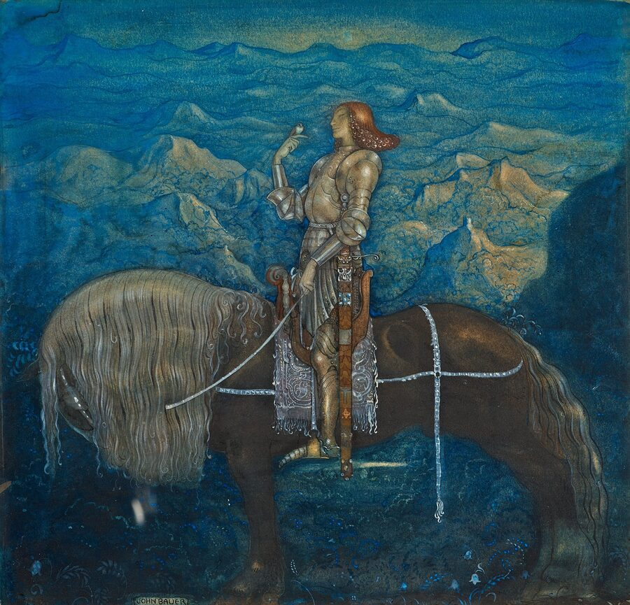
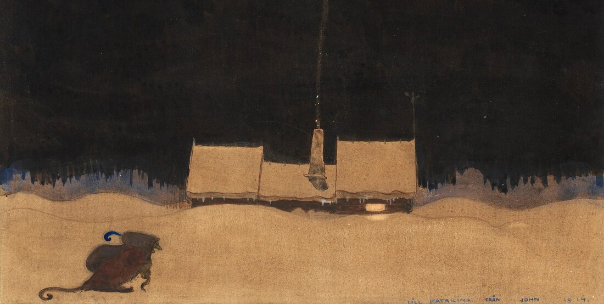
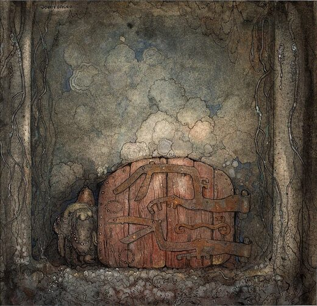

Family movie night
Movie Night in the Shire
Movies and shows from my server, just for family.
✦
Invite only. Ask me for an invite first. Tailscale has to be ON or nothing works. If the connection check page turns green, you're good.

How to Set It Up
8 quick steps. Check them off as you go.
0 of 8
-
-
-

http://server.tail2a39ff.ts.net:8096
Not working? Open Tailscale, look at the number under server, and type http://THAT-NUMBER:8096 instead.
-
-
-
http://server.tail2a39ff.ts.net:8096
Not working? Open Tailscale, look at the number under server, and type http://THAT-NUMBER:8096 instead.